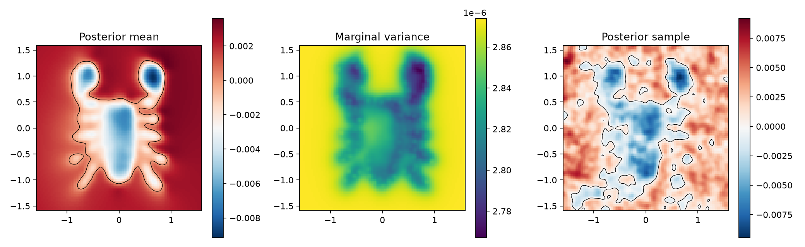
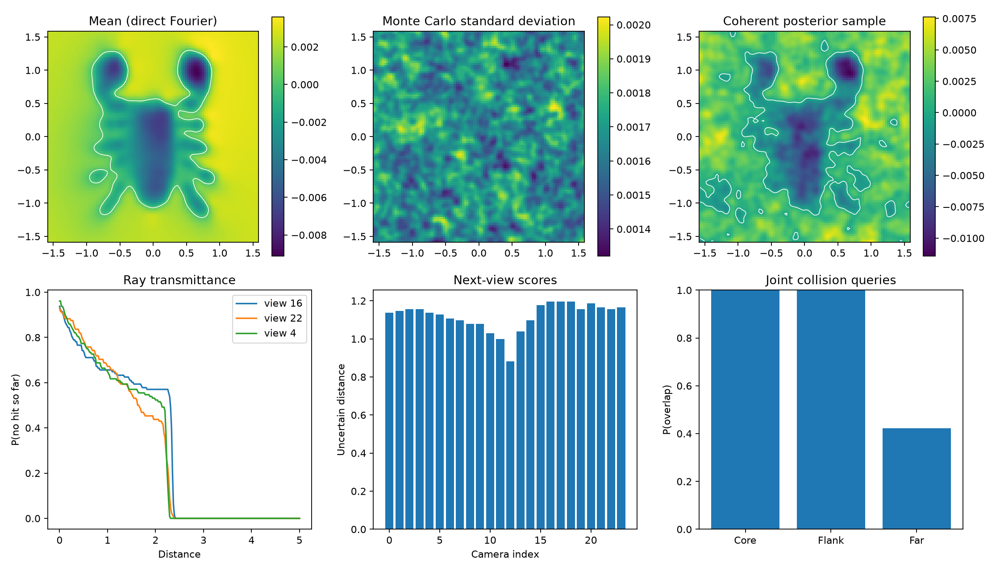
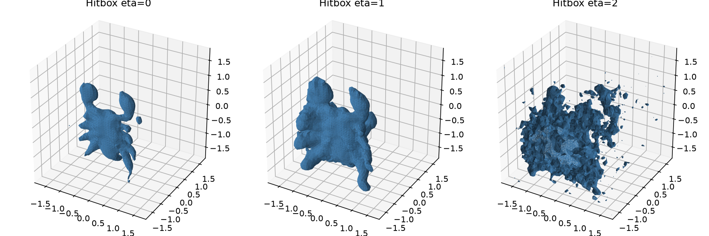
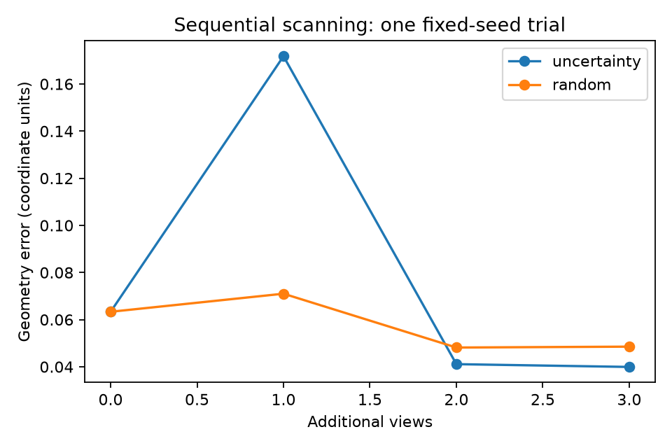
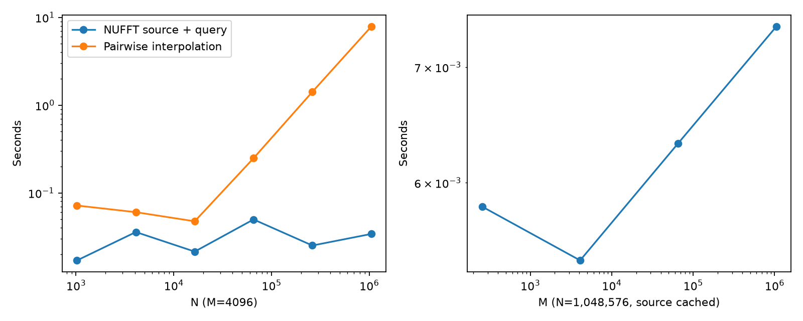

An upstream GPU baseline, reconstructed applications, and a tested NUFFT prototype reaching one million input points.
Upstream revision 2352f1ef98aab20e0303611c1fa2b0948acd2a05. Python 3.11.15, JAX 0.6.2, Flax 0.10.6, cuFINUFFT 2.5.1. Float32 unless stated; highest JAX matrix-multiply precision. Results are synchronized wall-clock measurements, with first calls separated from repeated calls. GPU clocks were not locked; all individual repetitions are retained in JSON.
The complete numerical path of the published scorpion example ran at its supplied settings: two cameras, 691 noisy points, 10,000 slice queries, length scale 0.01, per-axis variance 0.1 (product variance 0.001), diagonal regularizer 0.02, 101³ Fourier modes, and a 50³ nonuniform interpolation grid. The literal script's plotting dependencies and mesh-loader API needed compatibility adjustments; upstream numerical source was loaded from a detached worktree. Batch sizes were bounded to 128 for means and 64 for variance/samples.
Application types were reconstructed on the available scorpion: joint collision queries, ray transmittance, next-view scoring, sequential view acquisition, and uncertainty hitboxes. The repository does not release the paper's full scenes, scripts, seeds, or timing protocol. These are not exact reproductions of its dragon/cat/falcon figures or its A6000 timings. The historical SPSR baseline was not rerun.
Reference: GeoSPSR paper (especially Appendix B and Figures 11, 15–16), and official repository. The paper reports an RTX A6000; Figure 16 labels its Cholesky/SGD runs 6.5/1.44 seconds. Missing configurations prevent a defensible numerical speedup relative to those labels.
| Operation | Seconds | Timing scope |
|---|---|---|
| amortization first | 13.6613 | First call, including compilation |
| mean data first | 2.3297 | First call, including compilation |
| mean grid first | 1.2800 | First call, including compilation |
| mean grid repeat | 1.0853 | API repeat; may recompile closures |
| variance grid first | 26.5265 | First call, including compilation |
| samples grid first | 31.0468 | First call, including compilation |
| sdd mean grid first | 2.6015 | First call, including compilation |

compute_covariance added the conditioning update; corrected to subtract it. Covariance diagonals now agree with marginal variances and conditioning reduces covariance.sigma I, while SDD used sigma² I. Both now interpret sigma as noise variance. The interactive example now squares its input noise standard deviation.sqrt(sigma).Seven GPU tests passed: covariance diagonal/PSD, empirical posterior moments, SDD/Cholesky consistency, NUFFT cross sums and periodicity, coupled prior evaluation, matrix-free training matvec/CG, and the residual-covariance sampler. Source at tests/; raw output tests.log.
The upstream example's 1,000-step SDD mean differed from Cholesky by 80.65% in relative L2. Thus its default optimization settings do not demonstrate convergence on this particular scan; solver correctness and solver convergence are separate questions. With the corrected variance convention, the same 1,000 iterations at learning rate 0.001 leave relative residual 0.826; rates 0.1 and 1.0 reduce it to 7.4×10⁻⁵ and 4.4×10⁻⁵, respectively, at noise variance 0.02. These are case-specific tuning results, not universal learning-rate recommendations.
All primary application queries reuse 128 coherent posterior functions, with outward normals and negative-inside convention. The diagonal regularizer remains 0.02 for comparability with the upstream baseline, despite scan coordinate/normal noise having standard deviation 0.02. It is a model hyperparameter, not a matched estimate of that simulated noise. The Monte Carlo standard error of a probability is at most 4.42 percentage points; this does not include discretization or model error.
| Operation | Seconds |
|---|---|
| fit_first | 0.5136 |
| draw_coefficients_first | 10.5695 |
| slice_mean | 0.0058 |
| slice_samples | 0.1861 |
| ray_samples | 0.1778 |
| collision_samples | 0.1986 |
| volume_mean | 0.0054 |
| volume_samples | 0.1900 |
| Proxy | P(discrete overlap) |
|---|---|
| Core | 1.000 |
| Flank | 1.000 |
| Far | 0.422 |
Collision means at least one of 512 proxy-surface points lies inside the sampled solid. This is a discrete overlap test, not certified continuous collision detection; enclosure and between-point intersections can be missed. Transmittance is a prefix joint probability, not a product of independent marginals. Camera scores measure ray length with transmittance in [0.05, 0.95]. All measured transmittance curves were monotone.


One fixed-seed trial acquired three extra views. Scores use the paper-style 41³ prior / 101³ cross approximation for this experiment, and 64 functions. Error is symmetric nearest-neighbor distance between reconstruction vertices and 20,000 area-uniform ground-truth mesh samples. Reconstruction vertices are not area-uniform, so this metric has meshing bias. Different views also acquire different point counts.
| Policy | Initial error | Final error | Final N |
|---|---|---|---|
| uncertainty | 0.06334 | 0.03993 | 6482 |
| random | 0.06334 | 0.04854 | 6379 |

For solved vector weights αj, aggregate A(n) = Σ_j α_j exp(−i n·x_j), form b(n) = −i ρ(n) n·A(n)/|n|² with b(0)=0, and evaluate Re Σ_n b(n) exp(i n·q). This is a type-1 NUFFT, a spectral multiplier, and a type-2 NUFFT. It avoids all query–source pairs. Cached coefficients also make new query cost independent of N. Samples add their prior Fourier coefficients before querying.
Source aggregation plus query has approximate cost O((N+M)w³ + L log L), with tolerance-dependent spreading width w. This replaces pairwise interpolation's O(NM) work. The implementation includes plan creation and host-to-device source transfers in the reported aggregation times; query times include plan creation and query transfers. It does not include the training solve. Source and query medians are summed, rather than claiming a directly measured fused end-to-end timing.
| N | M | Pairwise interpolation (s) | NUFFT aggregate + query (s) | Speedup |
|---|---|---|---|---|
| 1024 | 4096 | 0.071694 | 0.016998 | 4.2× |
| 4096 | 4096 | 0.060248 | 0.035770 | 1.7× |
| 16384 | 4096 | 0.047415 | 0.021414 | 2.2× |
| 65536 | 4096 | 0.248324 | 0.049767 | 5.0× |
| 262144 | 4096 | 1.416654 | 0.025121 | 56.4× |
| 1048576 | 4096 | 7.838313 | 0.034019 | 230.4× |
The full-cutoff direct Fourier check gives relative L2 error 2.78e-06 at 32 random displacement points. NUFFT differs from the interpolated scorpion mean by 1.37%, and the large-N random-weight tests by about 2.3–2.6%: these differences include removal of the interpolation approximation, rather than NUFFT transform error. The tests independently check signs, normalization, ordering, and zero mode.
The cached scorpion mean query takes 5.16 ms. Constructing the same 50³ interpolation table by NUFFT takes 32.57 ms warm (90.16 ms first call), compared with the upstream first-call 13.66 s. These preparation costs should be amortized according to actual reuse.

K_L = Re Φ diag(ρ) Φ* admits the same NUFFT machinery. Batched CG solves three normal RHS without an N×N matrix. These tests use synthetic sphere points, noise variance 0.02, relative CG tolerance 10⁻⁵, and no nontrivial preconditioner. CG residuals refer to K_L + noise; separate analytic-kernel residuals are measured on 64 random rows. Residual spot checks do not bound the full solution or reconstructed-surface error.
| N | Cutoff | Setup (s) | Solve (s) | Iterations | Max finite residual | Analytic residual, 64 rows |
|---|---|---|---|---|---|---|
| 4096 | 50 | 0.134 | 0.039 | 5 | 2.2e-06 | 0.00862 |
| 4096 | 100 | 0.314 | 0.303 | 5 | 2.6e-06 | 0.00107 |
| 16384 | 50 | 0.029 | 0.072 | 7 | 2.1e-06 | 0.00894 |
| 65536 | 50 | 0.020 | 0.113 | 10 | 4.8e-06 | 0.0121 |
| 262144 | 50 | 0.023 | 0.223 | 15 | 8.2e-06 | 0.011 |
| 1048576 | 50 | 0.028 | 0.701 | 23 | 9.4e-06 | 0.014 |
| 1048576 | 100 | 0.194 | 1.670 | 24 | 9.9e-06 | 0.000883 |
At length scale 0.01, cutoff 50 retains only 85.64% of the analytic kernel's diagonal spectral mass; cutoff 100 retains 97.61%. The regularizer makes the tested systems relatively easy. These solve times do not establish similar iteration counts for noisy normals, lower noise, clustered real scans, or shorter length scales. On the 4,096-point cutoff-100 run, the analytic dense solve took 0.044 s versus 0.303 s for NUFFT-CG; initialization and compilation differ between first and later runs, so these are not matched warm timing studies. Large-N posterior sample generation and exact marginal variance remain separate work.
We measured far-field block compressibility before selecting an FMM implementation. Each block has 256 targets and 256 sources; the cross block has 768 vector-weight columns. Values use float64, NUFFT tolerance 10⁻¹¹, and the 101³ finite spectrum. Ranks below are for relative Frobenius error 10⁻⁴. They establish local compression potential, not global FMM accuracy or speed.
| Length scale | Geometry | Kvv rank | Kfv rank | Kvv max |entry| |
|---|---|---|---|---|
| 0.01 | separated_x | 80 | 58 | 9.4e-10 |
| 0.01 | diagonal | 4 | 8 | 9.4e-23 |
| 0.01 | near | 99 | 86 | 0.0005 |
| 0.01 | periodic_seam | 98 | 87 | 0.00061 |
| 0.04 | separated_x | 25 | 13 | 7.8e-05 |
| 0.04 | diagonal | 4 | 8 | 3.2e-07 |
| 0.04 | near | 29 | 24 | 0.00094 |
| 0.04 | periodic_seam | 29 | 24 | 0.00095 |
A practical next comparison is a periodic, kernel-independent FMM for the full analytic Kvv, and a near/far hybrid for Kfv. At small length scale the vector kernel is very local; GPU neighbor lists plus controlled far-field compression may outperform a large three-dimensional spectral grid. The separable product Matérn kernel is not a radial Laplace kernel, so a stock Coulomb/dipole FMM is not a drop-in replacement. Periodic images, the Poisson zero mode, vector components, and approximation symmetry/positive definiteness must be handled explicitly.
For an implementation candidate, skelFMM exposes custom operators and GPU batched application. Chen et al., Fast Dipole Sums demonstrates a related geometry fast-summation approach, but uses a different kernel/representation. No FMM speedup is claimed here.
./reproduction/setup.sh ./reproduction/run_env.sh reproduction/baseline.py --upstream ./reproduction/run_env.sh reproduction/applications.py ./reproduction/run_env.sh reproduction/sequential_scan.py ./reproduction/run_env.sh reproduction/benchmark.py ./reproduction/run_env.sh reproduction/training.py ./reproduction/run_env.sh reproduction/fmm_assessment.py ./reproduction/run_env.sh reproduction/solver_audit.py ./reproduction/run_env.sh -m pytest -q tests ./reproduction/run_env.sh reproduction/make_report.py
Run GPU experiments sequentially. The current runtime is in /opt/geospsr-runtime because the home filesystem is nearly full. Set GEOSPSR_RUNTIME to another writable location with sufficient space when installing elsewhere. Raw data and meshes are under reproduction/results. Locked requirements and upstream commit are preserved.
Raw measurements: baseline · applications · sequential scan · fast sums · training · FMM ranks · SDD audit · environment.